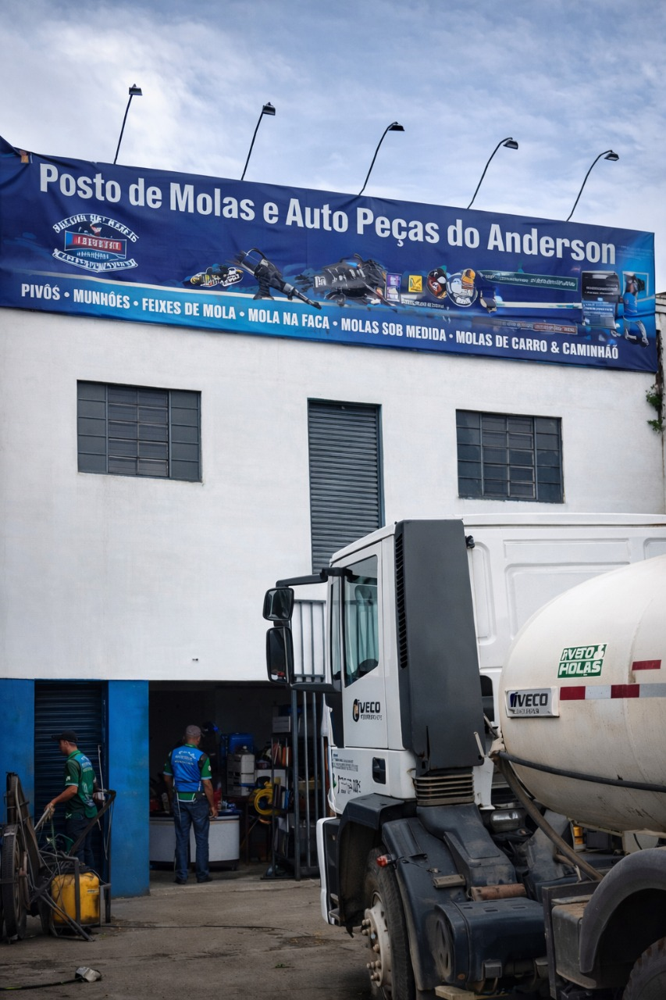

Troca de molas
Substituição de molas quebradas ou desgastadas para caminhões, utilitários e veículos pesados.
Pires do Rio, Goiás
Atendimento rápido para caminhões, utilitários e veículos de trabalho, com peças de qualidade e mão de obra qualificada desde 2017.

Serviços de oficina
Soluções para melhorar estabilidade, capacidade de carga, segurança e disponibilidade do veículo no trabalho.
Substituição de molas quebradas ou desgastadas para caminhões, utilitários e veículos pesados.
Aumento de capacidade de carga para veículos de trabalho que enfrentam rotina intensa.
Fabricação personalizada conforme peso, uso e tipo de veículo, com ajuste direto na necessidade do cliente.
Manutenção completa, ajustes de estabilidade e correção de folgas para rodar com mais segurança.
Montagem, desmontagem, alinhamento e ajustes em conjuntos de feixe de molas.
Troca e manutenção de peças essenciais da suspensão para preservar dirigibilidade e firmeza.
Serviços em rodas, freios, tambores de freio e componentes ligados à segurança do veículo.
Solda industrial, reparos de chassi, mesa de quinta roda e serviços estruturais para veículos pesados.
Peças para suspensão, molas e componentes para caminhões, utilitários e veículos de carga.
Atendimento no pátio
A oficina trabalha com funcionários qualificados, peças de altíssima qualidade e um atendimento direto para reduzir parada e devolver confiança ao veículo.
Verificação do conjunto de molas, suspensão, rodas e freios antes do reparo.
Equipe preparada para atender caminhões e veículos de trabalho com menor tempo parado.
Componentes selecionados para aguentar estrada, peso e rotina puxada.
História
Anderson R. dos Santos, natural de Pires do Rio, começou atendendo pequenos reparos de solda pela cidade. A qualidade do serviço e o bom atendimento fizeram a procura crescer até a abertura da empresa em 29 de maio de 2017.
Hoje, o Posto de Molas do Anderson atende em sede fixa no Jardim Goiás II, com estrutura para serviços em molas, suspensão, freios, chassi e peças para veículos pesados.
Contato
Chame a equipe, explique o veículo e combine o melhor horário para atendimento.